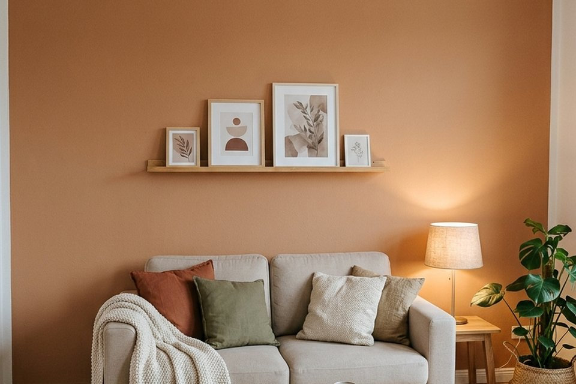

Kleines Wohnzimmer gemütlich machen: 10 Ideen
Ein kleines Wohnzimmer kann der gemütlichste Raum der Wohnung sein – wenn Farbe, Licht und Textilien stimmen. Die meisten Ideen kosten unter 50 € und funktionieren auch in der Mietwohnung.
Die 10 Ideen
1. Eine Wand in warmer Farbe
Die Idee aus dem Bild: Nur die Wand hinter dem Sofa wird in einem warmen Ton gestrichen – Terrakotta, Sand oder ein warmes Greige. Die anderen Wände bleiben weiß, so wirkt der Raum nicht kleiner, aber sofort wärmer. Für eine Wand reichen meist 2,5 Liter Farbe.
ca. 30–55 € (Farbe, Rolle, Kreppband)
2. Licht auf mehreren Höhen
Deckenlicht aus, dafür eine Steh- und eine Tischlampe mit warmweißem Licht (2700 K). Mehr dazu: 3 Lichtstimmungen im Vergleich.
ca. 40–100 €
3. Ein großer Teppich statt eines kleinen
Ein zu kleiner Teppich zerteilt den Raum. Lieber so groß, dass mindestens die vorderen Sofabeine darauf stehen. Rund wirkt in kleinen Räumen weicher.
ca. 40–120 €
4. Textilien in drei Farben
Kissen und eine grobe Strickdecke in drei Tönen, die zur Wand passen – zum Beispiel Rost, Creme und Oliv. Mehr Farben wirken schnell unruhig.
ca. 30–60 €
5. Vorhänge bis zum Boden
Leinenvorhänge, die knapp über der Decke aufgehängt werden und bis zum Boden reichen, machen den Raum höher und weicher.
ca. 30–70 €
6. Bilderleiste statt vieler Nägel
Auf einer Bilderleiste lassen sich Bilder anlehnen und jederzeit tauschen – nur zwei Bohrlöcher statt zehn.
ca. 15–30 € (plus Rahmen)
7. Eine große Pflanze
Eine große Pflanze in einem Korb wirkt ruhiger als viele kleine. Für wenig Licht geeignet: Zamioculcas oder Bogenhanf.
ca. 20–50 €
8. Ein kleiner runder Couchtisch
Runde Tische ohne Ecken lassen mehr Platz zum Durchgehen und wirken leichter als eckige.
ca. 30–80 €
9. Kerzen und Duft
Ein paar Kerzen oder LED-Kerzen auf einem Tablett – der einfachste Hygge-Trick für den Abend.
ca. 10–25 €
10. Eine Leseecke
Ein Sessel mit Lampe in der Ecke macht aus dem Wohnzimmer zwei Bereiche. So geht's: Leseecke vorher/nachher.
ca. 120–200 € (Spar-Version)
Was kostet das?
Unter 100 €: Wandfarbe, Kissen und Decke, Kerzen – die Ideen 1, 4 und 9 machen den größten Unterschied pro Euro.
Komplett: alle 10 Ideen zusammen ca. 370–790 €. Am besten nach und nach umsetzen.
Richtwerte für Deutschland, Stand November 2026. Die Preise schwanken je nach Händler und Saison.
Häufige Fragen
Darf ich in der Mietwohnung eine Wand farbig streichen?
Während der Mietzeit in der Regel ja. Beim Auszug muss eine kräftige Farbe meist wieder in einem hellen, neutralen Ton überstrichen werden – das kostet eine zweite Dose Farbe. Im Zweifel in den Mietvertrag schauen.
Welche Wandfarbe macht einen kleinen Raum gemütlich?
Warme, leicht gedeckte Töne: Sand, Terrakotta, Ocker oder warmes Greige. Kühle Grautöne und reines Weiß wirken im Winter eher kalt.